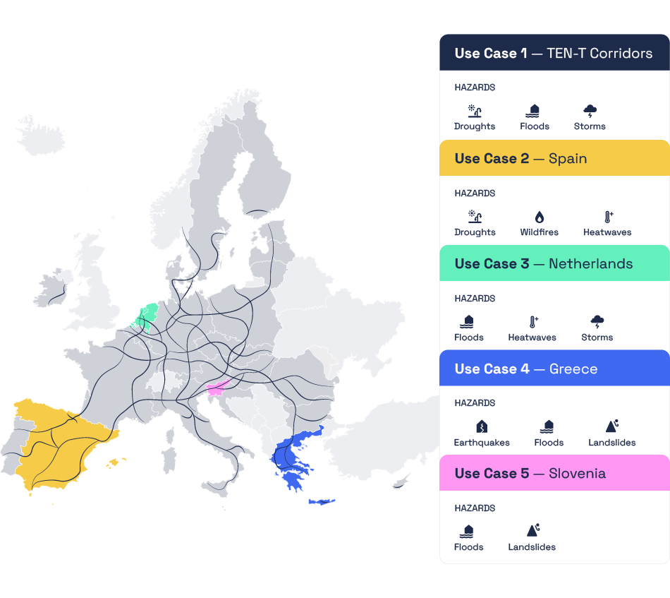

Introduction to the Use Cases#
One of the goals of the Miraca project is to address climate risks and adaptation strategies for different types of critical infrastructure in Europe exposed to different climate hazards. Therefore, 5 Use Cases have been developed, showcasing different tools and methods to carry out asset, network and system level climate risk and adaptation assessments.
Each Use Case focuses on a region, critical infrastructure and hazard. The Cases are being implemented in collaboration with relevant partners in each region, ensuring that the work is relevant to different users, from local stakeholders, operators of critical infrastructure, emergency services or policy regulators.


Navigate the table below to explore in more detail each Use Case:
Adaptation to Flood and Windstorm Impacts on the Trans-European Transport Network (TEN-T)
The TEN-T is a critical, continent-wide network of railway lines, roads, inland waterways, maritime routes, ports, airports, and rail terminals that connect Europe’s infrastructure. As climate change increases the frequency and intensity of extreme weather events, UC1 will evaluate the vulnerability hotspots and assess the economic impacts of potential damage to this vital transport network.
By combining hazard impacts with adaptation options, UC1 will help prioritize strategic interventions, paving the way for a pilot network adaptation strategy. A key innovation within UC1 is its multi-modal approach to network flow allocation, essential to captrure systenic failures.
Key stakeholders
DG Move, PIANC, UNECE, FEHRL, and other pan-European transport organizations
Adaptation to heatwaves, drought and wildfire impact to transport network in Spain
For the last three years, Catalonia has been under a severe drought condition. This, together with prolonged high temperatures and an increase of dry biomass in forests have increased the risk of wildfires. UC2 aims to improve the fire susceptibility maps beyond climatological conditions, in order to provide higher granularity maps. The research focuses on quantifying, for transport infrastructure (mainly roads and railways), what are the assets more prone to be affected by compound wildfire and drought risk. The study will include present and future climate condition and will describe the impacts at the network-level.
Key stakeholders
Department of Territory, Housing and Ecological Transition
Autoritat del Transport Metropolità (Metropolitan Transport Authority)
Adapting Electricity and Telecommunications Infrastructure to Flood Risks in the Netherlands
The Netherlands is a low-lying and densely populated country, exposed to recurrent flooding risk. UC3 aims to better understand the risks and impacts of flooding caused by extreme precipitation or fluvial flooding. The research focuses on quantifying the impacts of flooding due to the failure of assets in electricity and telecommunications infrastructure.
Key stakeholders
Electricity operator - Stedin
Telecommunications operator - KPN
Next Generation Infrastructures (NGinfra), a knowledge platform of managers of six critical infrastructures in the Netherlands
Climate Adaptation for Healthcare and Educational Infrastructure in Greece
Extreme weather conditions triggered by climate change can lead to increased geohazard and hydrological events, affecting vital infrastructures such as hospitals and schools. UC4 will focus on assessing single hazards (earthquake, flood, landslide) and multi-hazards (such as earthquake and flood, or earthquake and landslide) in Central Macedonia, Greece.
Systemic risk for hospitals is also assessed examining interdependencies with other critical infrastructure, such as the road network.
Key stakeholders
Local Municipalities of Northern Greece
Administrative Region of Central Macedonia
Ministry for Climate Crisis and Civil Protection of Greece
Adaptation to Landslide and Flood Impact on Power and Gas Network Reliability in Slovenia
Slovenia faces increasingly frequent extreme weather events, such as droughts and floods, due to climate change, which poses significant risks to its energy systems. UC5 focuses on analyzing the impact of flooding on the reliability of Slovenia’s power and gas networks.
Key stakeholders
European Union Agency for the Cooperation of Energy Regulators (ACER), ENTSO-E
ELES, Slovenia’s electricity network operator.